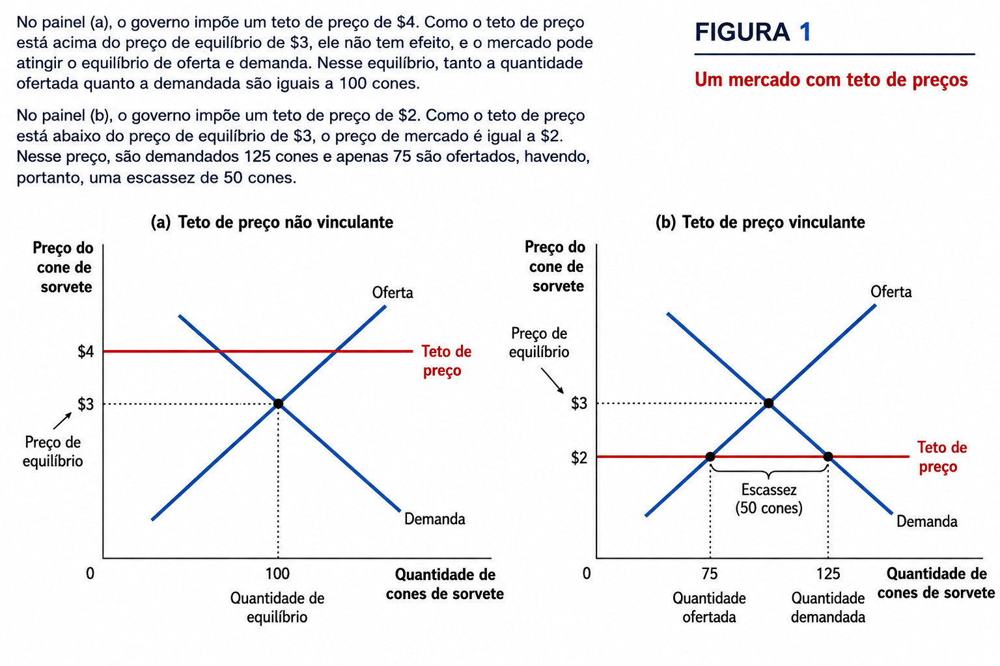
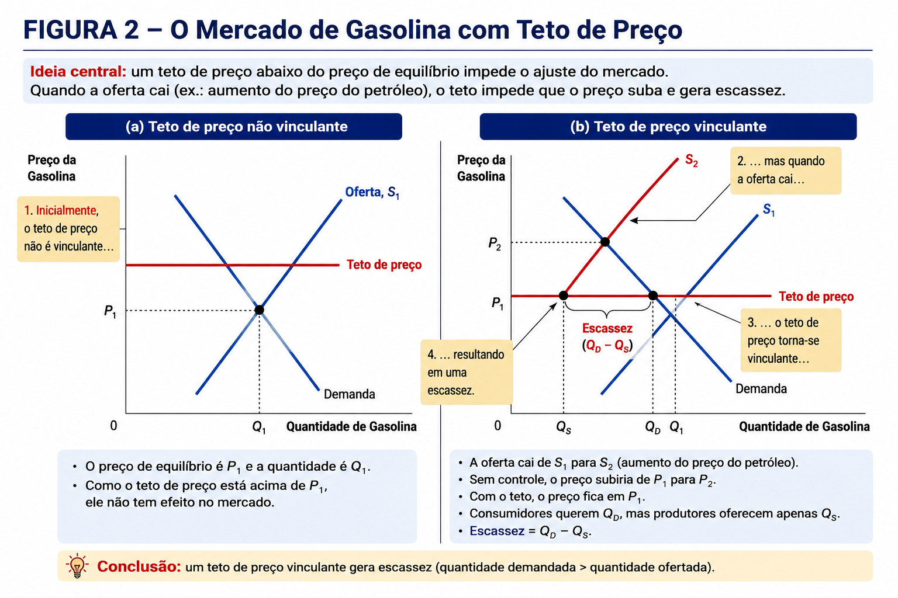
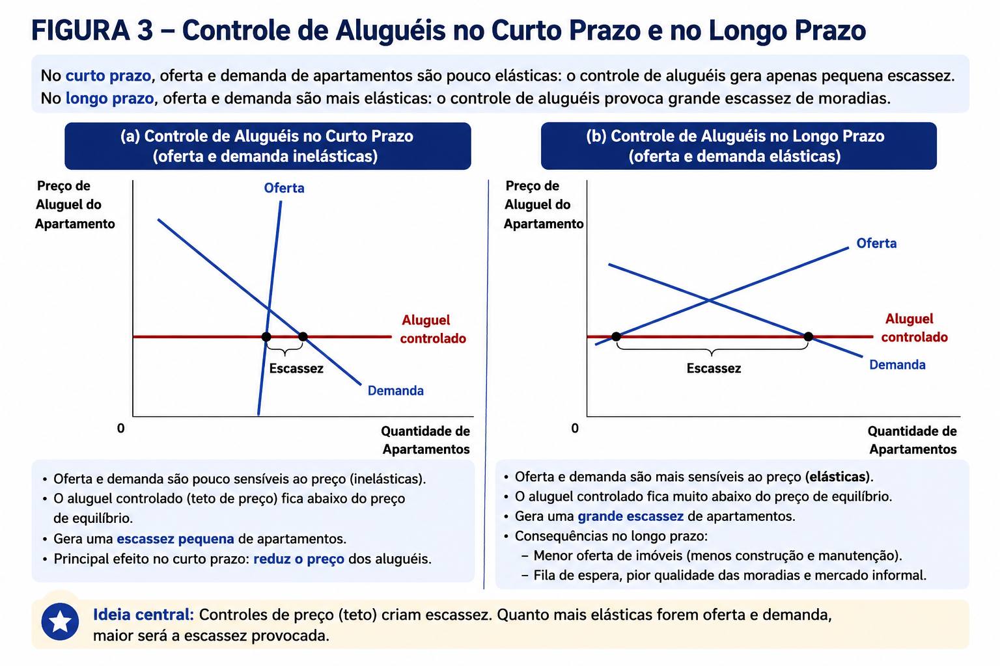
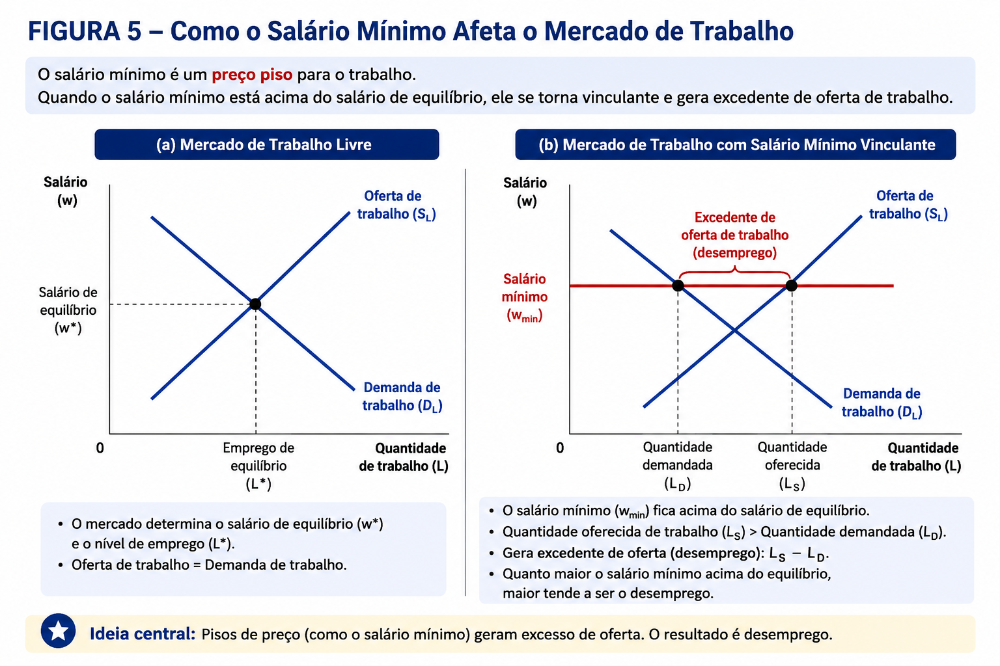
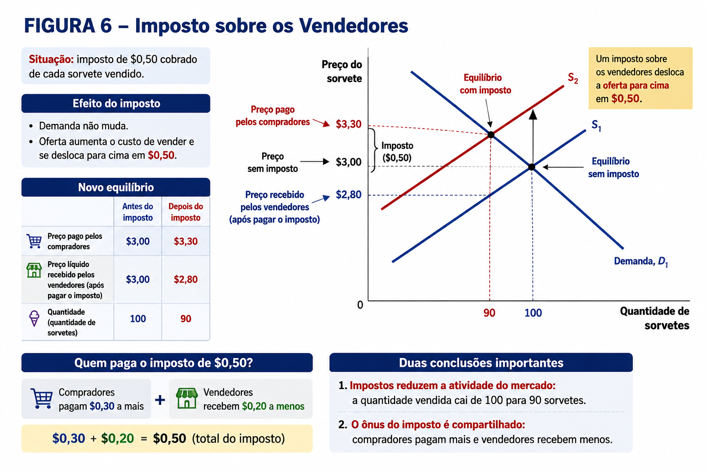
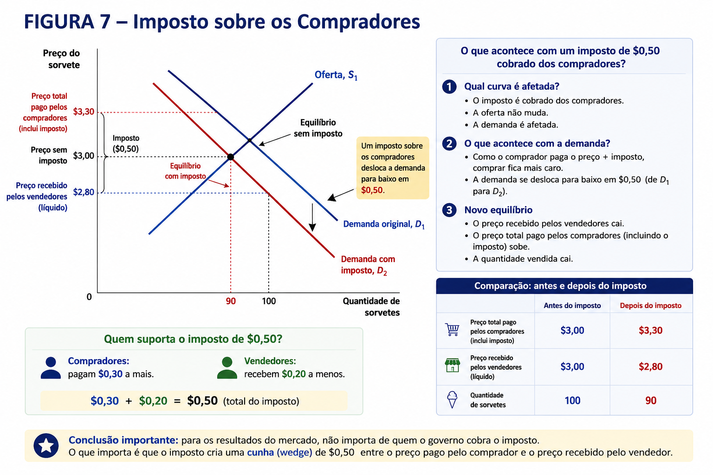
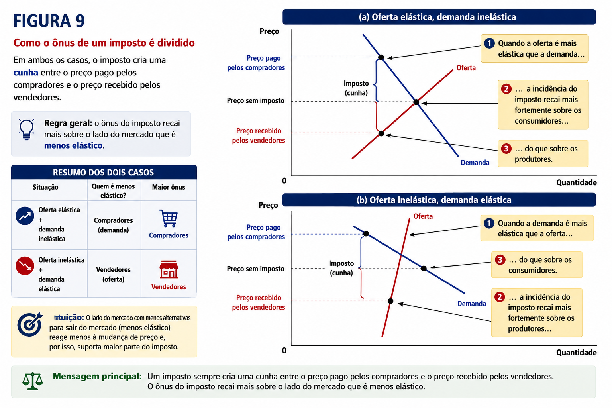

Aula 6 - Oferta, demanda e políticas do governo
02 — Como teto de preço afeta o resultado de mercado
03 — Avaliando as políticas de preço
05 — Como impostos sobre ofertantes afetam o resultado do mercado
06 — Como impostos sobre demandantes afetam o resultado do mercado
07 — Estudo de caso: O Congresso pode determinar quem paga um imposto sobre a folha?
08 — Elasticidade e incidência tributária
09 — Estudo de caso: Quem paga o imposto sobre bens de luxo?
Até aqui, utilizamos o modelo de oferta e demanda para compreender como os mercados funcionam:
⚖️ como preço e quantidade de equilíbrio são determinados;
↔︎️ como mudanças nas condições de mercado deslocam as curvas de oferta e demanda;
📏 como a elasticidade mede a intensidade das respostas de consumidores e produtores.
Agora damos um passo adiante:
O que acontece quando o governo interfere no funcionamento do mercado?
Nesta parte, usamos exatamente as mesmas ferramentas para analisar duas formas muito comuns de intervenção governamental:
🏷️ Controle de preço: O governo pode estabelecer limites para os preços praticados no mercado.
Preço máximo (teto) 🏠 Exemplo: controle de aluguéis → determina o maior preço permitido.
Preço mínimo (piso) 💼 Exemplo: salário mínimo → determina o menor preço permitido.
⚠️ Embora normalmente tenham como objetivo proteger determinados grupos, controles de preços podem produzir escassez, excedentes e outros efeitos não pretendidos.
💰 Tributação: O governo também utiliza impostos para:
financiar suas atividades; alterar incentivos; influenciar os resultados dos mercados.
Mas surge uma questão fundamental:
🤔 Quem realmente paga um imposto?
Se o governo cobrar um imposto das empresas, isso significa necessariamente que as empresas arcarão com seu custo?
Não necessariamente.
A resposta depende das forças de oferta e demanda — e, especialmente, das elasticidades.

Estudos de caso: efeitos dos controles de preços
⛽ 1. Gasolina nos EUA — teto de preços
A OPEP reduziu a produção de petróleo → oferta de gasolina ↓.
Sem controle, o preço subiria e o mercado alcançaria novo equilíbrio.
O teto de preços impediu o aumento do preço.
Resultado: quantidade demandada > quantidade ofertada → escassez e longas filas nos postos.

🏠 2. Controle de aluguéis — teto de preços
Objetivo: tornar a moradia mais acessível.
Curto prazo: oferta e demanda pouco elásticas → escassez relativamente pequena.
Longo prazo: maior elasticidade → proprietários ofertam menos e consumidores demandam mais.
Resultado: grande escassez de imóveis e menor incentivo à manutenção das moradias.

💼 3. Salário mínimo — piso de preços
O salário mínimo funciona como um preço mínimo para o trabalho.
Se estiver acima do salário de equilíbrio, torna-se vinculante. Oferta de trabalho > demanda por trabalho.
Resultado no modelo: excesso de oferta de trabalho → desemprego.
O efeito tende a ser maior nos mercados em que o salário de equilíbrio é mais baixo.
🔑 Ideia central: controles de preços vinculantes impedem o preço de equilibrar o mercado: teto → escassez | piso → excedente.

Os preços têm uma função essencial: coordenar as decisões de milhões de consumidores e produtores, equilibrando oferta e demanda.
Quando o governo fixa preços por lei: 🏷️ Controle de preços → distorce os sinais do mercado → impede o ajuste de oferta e demanda
🎯 A intenção × o resultado
| Política | Objetivo | Possível consequência |
|---|---|---|
| 🏠 Controle de aluguéis | Tornar a moradia acessível | Menor oferta, pior manutenção e escassez de imóveis |
| 💼 Salário mínimo | Aumentar a renda dos trabalhadores | Beneficia quem mantém o emprego, mas pode gerar desemprego |
⚠️ Uma política criada para ajudar determinado grupo pode acabar prejudicando parte desse mesmo grupo.
🔄 Existem alternativas?
Em vez de controlar diretamente os preços:
🏠 Subsídio ao aluguel → ajuda famílias de baixa renda sem reduzir diretamente a oferta de imóveis.
💰 Subsídio à renda/salário → complementa a renda dos trabalhadores sem elevar diretamente o custo de contratação para as empresas.
Mas há um trade-off:
\[ \text{Subsídios} \rightarrow \text{maior gasto público} \rightarrow \text{necessidade de impostos} \]
➡️ E isso nos leva à próxima questão: quais são os efeitos dos impostos sobre os mercados?
Governos utilizam impostos para financiar bens e serviços públicos, como estradas, escolas e defesa nacional.
Mas, do ponto de vista econômico, surge uma questão fundamental:
Quem realmente suporta o ônus de um imposto?
Imagine que o governo estabeleça um imposto de $0,50 por sorvete:
🍦 Consumidores: defendem que os vendedores paguem o imposto.
🏪 Vendedores: defendem que os consumidores paguem.
🏛️ Governo: poderia determinar que cada lado pagasse metade.
Mas será que a lei consegue determinar quem efetivamente arca com o custo do imposto?
🎯 Incidência tributária
Incidência tributária é a forma como o ônus econômico de um imposto é distribuído entre compradores e vendedores.
\[ \boxed{\text{Quem recolhe o imposto} \neq \text{necessariamente quem suporta seu ônus}} \]
Para descobrir quem realmente paga, precisamos analisar como o imposto altera: Oferta → Demanda → Preços → Quantidades
💡 Questão central: se compradores e vendedores dividem o imposto, o que determina quanto cada lado paga?
➡️ A resposta estará nas forças de oferta e demanda — e, como veremos, nas elasticidades.
Suponha que o governo cobre um imposto de $0,50 por sorvete vendido.

🔎 Analisando com oferta e demanda
1️⃣** Qual curva é afetada?** O imposto é cobrado dos vendedores.
➡️ A demanda não muda. ➡️ A oferta é afetada.
2️⃣** O que acontece com a oferta?**
O imposto aumenta o custo de vender o produto:
\[ \boxed{\text{Oferta desloca-se para cima em \$0,50}} \]
Para cada quantidade ofertada, os vendedores precisam receber $0,50 a mais dos consumidores para compensar o imposto.
3️⃣ O que acontece com o equilíbrio?
| Antes | Depois | |
|---|---|---|
| 🛒 Preço pago pelos compradores | $3,00 | $3,30 |
| 🏪 Preço líquido recebido pelos vendedores | $3,00 | $2,80 |
| 🍦 Quantidade | 100 | 90 |
🧾Quem paga o imposto de $0,50?
\[ \$3,30-\$2,80=\boxed{\$0,50} \]
🛒 Compradores: pagam $0,30 a mais 🏪 Vendedores: recebem $0,20 a menos
Portanto:
\[ \boxed{\text{Compradores: \$0,30}\quad+\quad\text{Vendedores: \$0,20}} \]
💡 Mesmo que o imposto seja legalmente cobrado dos vendedores, compradores e vendedores dividem seu ônus econômico.
🎯 Duas conclusões
\[ Q:100\rightarrow90 \]
Agora suponha que o governo cobre um imposto de $0,50 por sorvete comprado.

🔎 Analisando com oferta e demanda
1️⃣ Qual curva é afetada?
O imposto é cobrado dos compradores.
➡️ A oferta não muda.
➡️ A demanda é afetada.
2️⃣ O que acontece com a demanda?
Como o comprador precisa pagar o preço do produto + o imposto, comprar torna-se mais caro.
\[ \boxed{\text{Demanda desloca-se para baixo em \$0,50}} \]
Para cada quantidade, o comprador estará disposto a pagar ao vendedor $0,50 a menos, pois terá de entregar outros $0,50 ao governo.
3️⃣ O que acontece com o equilíbrio?
| Antes | Depois | |
|---|---|---|
| 🛒 Preço total pago pelos compradores | $3,00 | $3,30 |
| 🏪 Preço recebido pelos vendedores | $3,00 | $2,80 |
| 🍦 Quantidade | 100 | 90 |
🧾 Quem suporta o imposto?
Embora o imposto seja cobrado legalmente dos compradores:
🛒 Compradores → pagam $0,30 a mais 🏪 Vendedores → recebem $0,20 a menos
\[ \boxed{\$0,30+\$0,20=\$0,50} \]
⭐ Resultado surpreendente
Compare com o imposto anterior:
\[ \boxed{\text{Imposto sobre vendedores} \equiv \text{Imposto sobre compradores}} \]
Nos dois casos:
Preço pago pelo comprador: $3,30 Preço recebido pelo vendedor: $2,80 Quantidade: 90 Imposto: $0,50
💡 Para a incidência econômica, não importa de quem o governo cobra formalmente o imposto.
O imposto cria uma cunha (wedge) entre o preço pago pelo comprador e o preço recebido pelo vendedor:
\[ P_C-P_V=\text{Imposto} \]
🎯 Ideia central
Quem recolhe o imposto ao governo não determina quem efetivamente suporta seu ônus.
➡️ A divisão do ônus entre compradores e vendedores é determinada pelas forças do mercado — e, como veremos a seguir, pelas elasticidades da oferta e da demanda.
O FICA é um imposto sobre a folha de pagamento utilizado nos EUA para financiar programas como Social Security e Medicare.
Pela legislação apresentada no exemplo:
\[ \boxed{50\% \text{ empregado} + 50\% \text{ empresa}} \]
Mas isso significa que o ônus econômico do imposto será realmente dividido dessa forma?
🔎 O mercado de trabalho
Podemos analisar o imposto sobre a folha como qualquer outro imposto:
👷 Trabalho = bem negociado 💵 Salário = preço do trabalho 👥 Trabalhadores = oferta de trabalho 🏢 Empresas = demanda por trabalho
O imposto cria uma cunha entre:
\[ \boxed{\text{Salário pago pela empresa}>\text{Salário recebido pelo trabalhador}} \]
💰 Efeito do imposto
Após a introdução do imposto:
⬆️ Custo do trabalho para as empresas
⬇️ Salário líquido recebido pelos trabalhadores
⬇️ Quantidade de trabalho empregada
⚠️ Incidência legal ≠ incidência econômica
O Congresso pode determinar quem recolhe formalmente o imposto, mas não consegue determinar por lei quem efetivamente suporta seu custo.
\[ \boxed{\text{Incidência econômica depende da oferta e da demanda}} \]
💡 Mesmo que a lei estabeleça uma divisão 50/50, o verdadeiro ônus não precisa ser dividido igualmente.
🎯 Ideia central
Não importa se o imposto é formalmente cobrado da empresa, do trabalhador ou de ambos.
A divisão efetiva do ônus será determinada pelas forças do mercado — especialmente pelas elasticidades da oferta e da demanda por trabalho.
🔑 A elasticidade determina a incidência tributária
Situação Quem é menos elástico? Maior ônus
📈 Oferta elástica + demanda inelástica Compradores 🛒 Compradores 📉 Oferta inelástica + demanda elástica Vendedores 🏪 Vendedores 🛒 Demanda relativamente inelástica
Consumidores são pouco sensíveis ao preço e têm poucas alternativas.
➡️ Continuam comprando mesmo com o imposto. ➡️ O preço pago pelos compradores aumenta bastante. ➡️ Compradores suportam a maior parcela do imposto.
🏪 Oferta relativamente inelástica
Produtores são pouco sensíveis ao preço e têm poucas alternativas.
➡️ Continuam ofertando mesmo recebendo menos. ➡️ O preço líquido recebido pelos vendedores cai bastante. ➡️ Vendedores suportam a maior parcela do imposto.

⭐ Regra fundamental da incidência tributária:
\[ \boxed{\text{O ônus do imposto recai mais sobre o lado menos elástico do mercado.}} \]
Intuição: quem tem menos alternativas para sair do mercado reage menos à mudança de preço e, por isso, acaba suportando uma parcela maior do imposto.
💼 Aplicação: imposto sobre a folha
Se a oferta de trabalho é menos elástica que a demanda por trabalho:
\[ \boxed{\text{Trabalhadores suportam a maior parte do imposto}} \]
Assim, mesmo que a legislação determine uma divisão 50/50, a incidência econômica pode ser bastante diferente.
Em 1990, o Congresso dos EUA criou um imposto sobre bens como:
💎 joias · 🛥️ iates · ✈️ aviões particulares · 🚘 carros de luxo
Objetivo: aumentar a arrecadação tributando principalmente os mais ricos.
💭 Intuição do governo: se apenas pessoas ricas compram esses bens, elas pagarão o imposto.
⚠️ Mas quem realmente suportou o imposto?
No mercado de iates:
| Característica | Elasticidade | Por quê? |
|---|---|---|
| 🛒 Demanda por iates | Elástica | Os compradores podem facilmente desistir da compra ou gastar em outros luxos |
| 🏭 Oferta de iates | Inelástica | Fábricas e trabalhadores têm dificuldade de migrar rapidamente para outras atividades |
⚖️ Incidência tributária
Como a oferta é menos elástica que a demanda:
\[ \boxed{\text{Maior parte do imposto} \rightarrow \text{Produtores}} \]
O imposto reduziu significativamente o preço líquido recebido pelos produtores, atingindo empresas e trabalhadores da indústria de iates.
🎯 Resultado não pretendido
Objetivo: taxar os ricos ⬇️ Demanda dos ricos era muito elástica ⬇️ Oferta era relativamente inelástica ⬇️ 🏭 Grande parte do ônus recaiu sobre produtores e trabalhadores
📌 O Congresso percebeu os efeitos adversos e revogou grande parte do imposto em 1993.
⭐ Lição: não basta perguntar “quem é legalmente tributado?”. É preciso perguntar “qual lado do mercado é menos elástico?”.
A economia é influenciada por dois tipos de leis:
🏪 Leis do mercado → oferta e demanda 🏛️ Leis do governo → controles de preços, impostos e outras políticas
📌 O que aprendemos?
| Política | Efeito principal |
|---|---|
| 🔻 Teto de preços vinculante | Gera escassez |
| 🔺 Piso de preços vinculante | Gera excedente |
| 💰 Impostos | Criam uma cunha entre o preço pago e o preço recebido e reduzem a quantidade negociada |
| ⚖️ Incidência tributária | O maior ônus recai sobre o lado menos elástico |
🧠 Três ideias para levar desta aula
Preços coordenam os mercados: Intervenções nos preços alteram os sinais que equilibram oferta e demanda.
A intenção de uma política não garante seu resultado: Políticas públicas podem produzir efeitos não pretendidos.
Oferta e demanda continuam sendo nosso ponto de partida.
⭐ Ao analisar uma política governamental, pergunte primeiro:
Qual curva é afetada? → Para onde ela se desloca? → O que acontece com preço e quantidade?
\[ \boxed{\text{Oferta + Demanda = ferramentas fundamentais para analisar políticas públicas}} \]
Questões de concurso
Uma redução no imposto sobre o consumo de um bem com demanda preço-inelástica e oferta preço-elástica terá incidência maior sobre o bem-estar dos consumidores do que sobre o bem-estar das firmas.
( ) Certo ( ) Errado
Um aumento no imposto sobre o consumo de um bem cuja demanda e oferta tenham elasticidades unitárias incidirá apenas sobre o bem-estar do consumidor, pois as firmas conseguem repassar o tributo totalmente no novo preço de equilíbrio.
( ) Certo ( ) Errado
Um aumento no imposto sobre o consumo de um bem com demanda perfeitamente preço-elástica e oferta preço-inelástica terá incidência apenas sobre o bem-estar dos produtores, pois os consumidores somente adquirem o bem a um preço único de equilíbrio.
( ) Certo ( ) Errado
Um imposto sobre o consumo de produtos viciantes tem redução pequena no bem-estar dos consumidores, uma vez que a demanda desses produtos é altamente elástica.
( ) Certo ( ) Errado
Tributos mais altos em bens que causam vício, como cigarros e bebidas alcoólicas, têm a quase-totalidade de seu efeito sobre o bem-estar do consumidor.
( ) Certo ( ) Errado
Por ser um serviço vital aos seus usuários, a hemodiálise pode ser considerada um serviço de oferta preço-inelástica.
( ) Certo ( ) Errado
Bens de consumo essencial tendem a ter elasticidade-preço da demanda menor do que bens de consumo supérfluo.
( ) Certo ( ) Errado
No inverno, uma cidade onde as pessoas disponham de sistemas a gás para aquecimento de água deve apresentar elasticidade-preço da demanda por eletricidade maior que a de outra cidade em que haja somente sistemas elétricos de aquecimento de água.
( ) Certo ( ) Errado
Se a oferta de um bem tiver elasticidade zero em relação ao preço, a demanda determinará unicamente o preço de equilíbrio da transação.
( ) Certo ( ) Errado
Bens essenciais têm demanda elástica em relação ao preço.
( ) Certo ( ) Errado
O aumento da elasticidade de demanda de determinado mercado limita o potencial do poder de monopólio de cada um de seus produtores.
( ) Certo ( ) Errado
Um mercado relevante do ponto de vista da necessidade de imposição tarifária por parte do órgão regulador é aquele com alta e positiva elasticidade-preço cruzada da demanda.
( ) Certo ( ) Errado
Gabarito comentado
1. Instituto Rio Branco — Diplomata — IADES — 2023
Uma redução no imposto sobre o consumo de um bem com demanda preço-inelástica e oferta preço-elástica terá incidência maior sobre o bem-estar dos consumidores do que sobre o bem-estar das firmas.
✅ Gabarito: Certo
A demanda é menos elástica que a oferta. Portanto, os consumidores têm menor capacidade de ajustar sua quantidade demandada diante de alterações no preço e suportam uma parcela maior da incidência tributária.
Assim, se o imposto for reduzido, a maior parcela do benefício dessa redução tende também a alcançar os consumidores.
A regra fundamental é:
\[ \boxed{\text{O lado menos elástico do mercado suporta a maior parcela do imposto.}} \]
2. Instituto Rio Branco — Diplomata — IADES — 2023
Um aumento no imposto sobre o consumo de um bem cuja demanda e oferta tenham elasticidades unitárias incidirá apenas sobre o bem-estar do consumidor, pois as firmas conseguem repassar o tributo totalmente no novo preço de equilíbrio.
❌ Gabarito: Errado
Quando oferta e demanda apresentam elasticidades equivalentes, compradores e vendedores compartilham o ônus do imposto.
Não há razão para que as firmas consigam repassar integralmente o tributo aos consumidores.
O imposto cria uma cunha entre:
\[ P_C-P_V=t \]
em que:
Com elasticidades iguais, a incidência tende a ser distribuída entre os dois lados do mercado.
3. Instituto Rio Branco — Diplomata — IADES — 2023
Um aumento no imposto sobre o consumo de um bem com demanda perfeitamente preço-elástica e oferta preço-inelástica terá incidência apenas sobre o bem-estar dos produtores, pois os consumidores somente adquirem o bem a um preço único de equilíbrio.
✅ Gabarito: Certo
Uma demanda perfeitamente elástica significa que os consumidores não aceitam pagar qualquer preço acima do preço de mercado.
Logo, os produtores não conseguem transferir o imposto para os compradores por meio de um aumento de preço.
Como a oferta é relativamente menos elástica, o ônus recai sobre os produtores, que passam a receber um preço líquido menor.
\[ \boxed{E_D\rightarrow\infty \quad\Rightarrow\quad \text{produtores suportam o imposto}} \]
4. Instituto Rio Branco — Diplomata — IADES — 2023
Um imposto sobre o consumo de produtos viciantes tem redução pequena no bem-estar dos consumidores, uma vez que a demanda desses produtos é altamente elástica.
❌ Gabarito: Errado
Produtos que causam dependência tendem a apresentar demanda relativamente inelástica, e não altamente elástica.
Os consumidores reduzem pouco a quantidade demandada diante de um aumento de preço.
Consequentemente, quando esses produtos são tributados, os vendedores conseguem transferir uma parcela relativamente elevada do imposto aos consumidores.
Portanto, a justificativa apresentada no item está invertida.
5. Instituto Rio Branco — Diplomata — IADES — 2022
Tributos mais altos em bens que causam vício, como cigarros e bebidas alcoólicas, têm a quase-totalidade de seu efeito sobre o bem-estar do consumidor.
✅ Gabarito: Certo
Bens associados ao vício apresentam, em geral, demanda fortemente inelástica.
Como os consumidores alteram pouco seu consumo em resposta ao aumento do preço, eles têm menor capacidade de evitar o imposto.
Assim, uma parcela muito elevada da incidência econômica pode recair sobre os consumidores.
\[ \boxed{\text{Demanda muito inelástica} \Rightarrow \text{maior ônus sobre consumidores}} \]
6. Instituto Rio Branco — Diplomata — IADES — 2022
Por ser um serviço vital aos seus usuários, a hemodiálise pode ser considerada um serviço de oferta preço-inelástica.
❌ Gabarito: Errado
O fato de a hemodiálise ser um serviço essencial para o paciente está relacionado à elasticidade da demanda, e não diretamente à elasticidade da oferta.
Como os pacientes têm pouca possibilidade de deixar de utilizar o serviço diante de um aumento de preço, sua demanda tende a ser relativamente inelástica.
A elasticidade da oferta depende de outros fatores, como capacidade instalada, disponibilidade de equipamentos, profissionais e possibilidade de expansão da produção.
7. Instituto Rio Branco — Diplomata — IADES — 2022
Bens de consumo essencial tendem a ter elasticidade-preço da demanda menor do que bens de consumo supérfluo.
✅ Gabarito: Certo
Bens essenciais tendem a apresentar demanda relativamente inelástica, pois os consumidores têm maior dificuldade de reduzir seu consumo quando o preço aumenta.
Já bens supérfluos ou de luxo podem ser mais facilmente abandonados ou substituídos.
Assim, em módulo:
\[ |E_D^{essencial}|<|E_D^{supérfluo}| \]
A classificação, contudo, depende das preferências e circunstâncias dos consumidores.
8. Instituto Rio Branco — Diplomata — CESPE — 2017
No inverno, uma cidade onde as pessoas disponham de sistemas a gás para aquecimento de água deve apresentar elasticidade-preço da demanda por eletricidade maior que a de outra cidade em que haja somente sistemas elétricos de aquecimento de água.
✅ Gabarito: Certo
A existência de substitutos próximos torna a demanda mais elástica.
Na primeira cidade, se o preço da eletricidade aumentar, os consumidores podem substituir parte de seu consumo utilizando sistemas de aquecimento a gás.
Na segunda cidade, essa alternativa não existe.
Portanto:
\[ \boxed{\text{Mais substitutos disponíveis} \Rightarrow \text{demanda mais elástica}} \]
9. Instituto Rio Branco — Diplomata — CESPE — 2017
Se a oferta de um bem tiver elasticidade zero em relação ao preço, a demanda determinará unicamente o preço de equilíbrio da transação.
✅ Gabarito: Certo
Elasticidade-preço da oferta igual a zero significa uma oferta perfeitamente inelástica.
Graficamente, a curva de oferta é vertical.
A quantidade ofertada permanece fixa independentemente do preço. Assim, a oferta determina a quantidade transacionada, enquanto a posição da curva de demanda determina o preço de equilíbrio.
\[ E_O=0 \]
Logo, alterações da demanda afetam o preço, mas não alteram a quantidade ofertada.
10. Instituto Rio Branco — Diplomata — CESPE — 2008
Bens essenciais têm demanda elástica em relação ao preço.
❌ Gabarito: Errado
Bens essenciais tendem a apresentar demanda inelástica em relação ao preço.
Mesmo que seu preço aumente, os consumidores têm dificuldade de reduzir significativamente o consumo.
Assim:
\[ |E_D|<1 \]
é a situação normalmente associada à demanda inelástica.
11. TCU — Auditor Federal de Controle Externo — CESPE — 2015
O aumento da elasticidade de demanda de determinado mercado limita o potencial do poder de monopólio de cada um de seus produtores.
✅ Gabarito: Certo
Quanto mais elástica for a demanda enfrentada por uma empresa, maior será a reação dos consumidores a aumentos de preço.
Isso reduz a capacidade da firma de elevar preços sem perder uma parcela significativa de suas vendas.
Portanto:
\[ \boxed{\text{Maior elasticidade da demanda} \Rightarrow \text{menor poder de mercado}} \]
Uma demanda pouco elástica, ao contrário, proporciona maior margem para a empresa elevar seus preços.
12. TCU — Auditor Federal de Controle Externo — CESPE — 2013
Um mercado relevante do ponto de vista da necessidade de imposição tarifária por parte do órgão regulador é aquele com alta e positiva elasticidade-preço cruzada da demanda.
❌ Gabarito: Errado
Uma elasticidade-preço cruzada positiva e elevada indica que os bens são substitutos próximos.
Nesse caso, um aumento no preço de um bem provoca forte aumento na demanda pelo outro:
\[ E_{xy}>0 \]
Quanto maior a possibilidade de substituição, maior tende a ser a pressão competitiva existente no mercado.
A necessidade de regulação tarifária está mais associada a situações nas quais o consumidor dispõe de poucas alternativas, como em mercados caracterizados por forte poder de mercado ou monopólio natural.
Portanto, uma alta elasticidade-preço cruzada positiva indica justamente maior possibilidade de substituição, contrariando a afirmação.